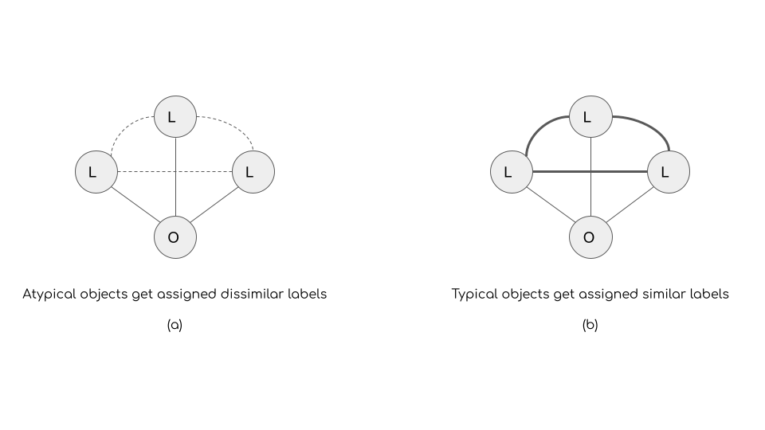
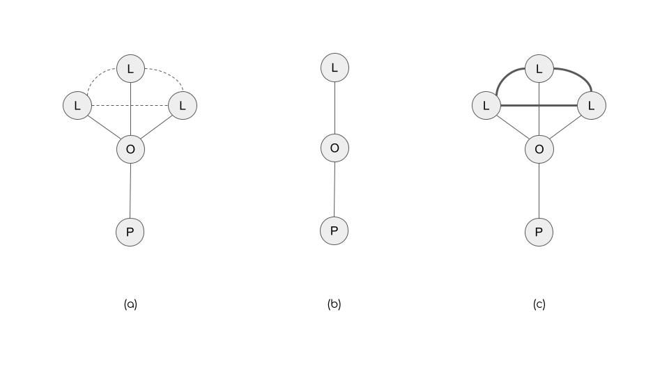
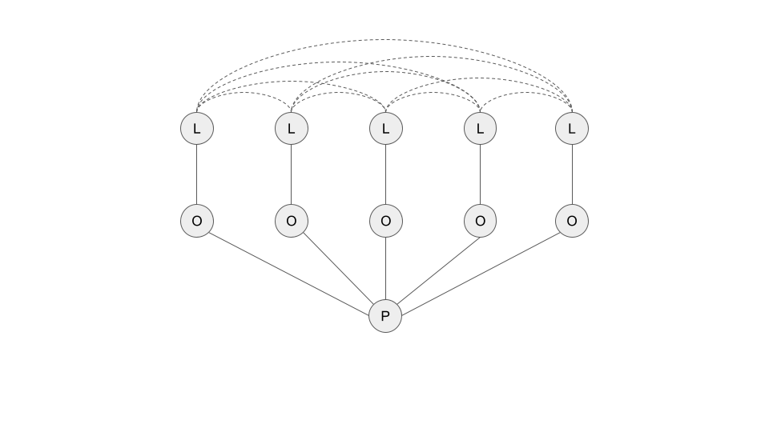
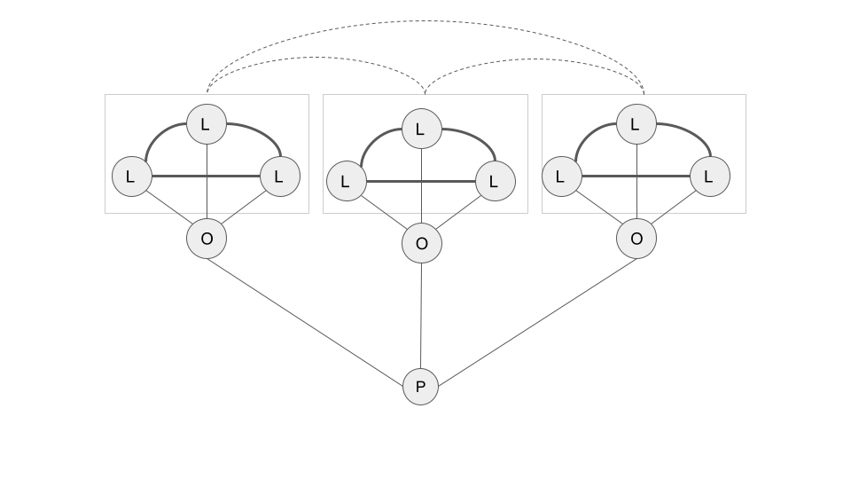

Introduction
In a forthcoming chapter on the subject of “culture and networks” for the second edition of the Sage Handbook of Social Network Analysis (edited by Peter J. Carrington, John McLevey, and John Scott)—see here for an uncorrected draft—I argue that there intimate links between recent work on cultural networks, duality, and cultural holes, and recent work in the categories literature dealing with fuzziness of categorization, atypicality, and variety in cultural choices.
This conceptual linkage is one that was initially noted and developed by Balazs Kocavs in a couple of papers (see here and here) in the early 2010s, but which has not been pursued or developed of late. This is despite the fact that work on categories pursues relentless mathematical formalization, but in a language and style that either obscure or do not make very intuitive its link to formal approaches in the cultural networks tradition based on the ideas of duality and two-mode network analysis (Mützel & Breiger, 2020).
In the chapter I argue that particularly that the various conceptual distinctions and measures proposed in Goldberg et al.’s 2016 paper on category atypiticaly, variety, and cultural boundary spanning can be given a familiar representation using tools from the analysis of cultural networks. The argument in the chapter is mostly informal. The purpose of this post is to provide a more formal treatment and extension of some of the ideas discussed in the chapter.
Culture, Networks, Objects, Labels
The first observation is that the main difference between typical categories studies and studies of cultural networks is that while the latter usual deal with a two-mode network of people by the objects they choose (in which the “objects” can sometimes be categories themselves, like the typical people X genres network studied by sociologists of tastes), categories research differentiate between particular objects (this restaurant, this film, this piece of music) and the category labels that some external audiences imposed on those object to classify them or group them (see Goldberg et al. 2016, p. 222).
So while the usual cultural networks study deals with a two-mode network of people by objects chosen (\(\mathbf{A}\)) of dimensions \(P \times O\), categories research split the analysis and measurement tasks across two distinct two-networks: \(\mathbf{A}\), and a second object by labels network (\(\mathbf{B}\)) of dimensions \(O \times L\).
The Label Space and Atypicality
It is easy to see that the main concepts developed by Goldberg et al. in the 2016 ASR paper (and previously Hannan and Kovacs in a 2015 Sociological Science piece) have ready-made representations in terms of two-mode network metrics.
Take for, instance, the idea that the category structure of a domain can be captured by “geometrically” representing the cultural space (as defined by the labels). This requires coming up with a criterion for defining interlabel distances, which are themselves based on some criterion for interlabel similarity.
In terms of two-mode network analysis, this boils down to taking the one mode projection of the (\(\mathbf{B}\)) matrix:
\[ LL = B^TB \tag{1}\]
The square matrix \(\mathbf{LL}\) contains the number of objects shared by each pair of labels \((i,j)\) in the off-diagonals, and the number of objects covered by each label in the diagonals. The Jaccard (J) similarity measure proposed by Goldberg et al. (eq. 1) is a function of these quantities, and thus can be written as:
\[ J_{ij} = \frac{LL_{ij}}{LL_{ii} + L_{jj} - LL_{ij}} \tag{2}\]
But of course, so are many other measures of similarity, such as cosine, Dice, min-overlap, max-overlap, and the like. All can be defined from quantities obtained from the one-mode label \(\times\) label network obtained from the projection of the original object \(\times\) label network.
Once we have a measure of similarity, inter-label distances are obtained by some transformation of label similarities, such that similar objects are close and dissimilar objects are far (Goldberg et al. use a negative exponential function due to Shepard). Distances, in this sense, are derivative of quantities obtained from the one-mode network projection.
Defining Object Atypicality
Having obtained inter-label similarity (distance) information, we can then loop back and define an object’s atypicality based on their likelihood of being assigned dissimilar (distant) labels. Conversely typical objects are those that are assigned similar (close) labels.

Thus, if we think of each object as having an “object ego-network” (see #fig-typ) where the “alters” are the labels assigned to it, the typicality/atypicality is purely a function of the weighted density of the alter-alter network surrounding ego, where the weight of the tie between alters is given by the label similarities (or distances). So, when the weights are similarities, typical objects have high “constraint” in their cultural ego network—in Burt’s sense as defined by Lizardo (2014)—with their label alters strongly linked to one another. Atypical objects, on the other hand have low constraint, with their label alters weakly tied to one another. So this is another way of saying that atypical objects span cultural holes in the interlabel network (see Figure 1).
Defining People’s Taste for Atypicality
But remember, we also have a network where people choose objects (\(\mathbf{B}\)), so that means we can “loop back” to the people—see Lizardo (2018)—and define their “taste for atypicality” by aggregating the atypicalities of the objects they choose (which are based on two-mode metrics from the objects \(\times\) label network). That’s exactly what Goldberg et al. do, but they don’t characterize it quite that way.
So, people’s taste for variety is just the average atypicality of the objects they choose, suitably weighted by their rating of the object if such information is available (see Goldberg et al. eq. 7), such that only objects for which the person displays a positive (after sampling) evaluation count.
The Object Space and Variety
The same approach, of course, can be used to construct an object \(\times\) object network either from the \(\mathbf{A}\) or \(\mathbf{B}\) networks to define people’s taste for variety. Basically, the idea is that variety seeking can be measured using information on “the average distance of the objects consumed [by people] and that variety seeking means liking pairs of objects that stand far apart in the cultural space” (Goldberg et al. 2016, p. 224).
Here Goldberg et al. get into some over-complication territory, since they insist on using “cultural space” information to define the inter-object similarities (distances). But then get hung up on the fact that sometimes the label set sizes of different objects are not the same (in our terms, objects cultural ego network sizes are different), and they want to compare distances across sets of different sizes and so forth to define inter-object distances.
Oddly, they ignore the lowest hanging fruit to defining inter-object similarities (and by implication distances). Had they been more attuned to the principle of duality they would have realized they actually had two choices:
\[ OO_1 = A^TA \tag{3}\]
\[ OO_2 = BB^T \tag{4}\]
Matrix \(OO_1\) would contain the basic quantities to compute inter-object similarities based on audience overlap. Matrix \(OO_2\) would contain the basic quantities to compute inter-object similarities based on inter-label overlap. The first approach is the one pursued by Lizardo (2014) for cultural object genre labels. Goldberg et al. use label distance information to define the inter-object similarity (distance) network, which is fine, so they opt for a complicated version of the projection approach, based on set theoretic distance measures between the label sets assigned to each pair of objects that account for different sizes across the pairs of sets being compared.

A more straightforward approach based on duality—like that pursued by Kovacs (2010) in other work—would have just said that objects are (similar) distant in cultural space to the extent they get assigned overlapping (different) labels. Any of the similarity measures (Jaccard, cosine, Dice) applied pairwise to the cells of the \(OO_2\) matrix would have yielded that information in a more intuitive way that Goldberg et al’s “modified Hausdorff distance” (Goldberg et al., eqs. 8-9) approach.
The Taste for Variety
In any case, once an interobject similarity (distance) network is obtained (preferably by the simpler duality approach), then we can loop back to the people and define their taste for variety similarly to how atypicality is defined for objects (this is what Goldberg et al. ultimately end up doing too).

People who seek variety have a cultural ego-network surrounded by objects who are themselves dissimilar (get assigned non-overlapping labels); people who don’t seek variety consume objects who get assigned overlapping labels. Thus, people bridge cultural holes in the variety sense, when they consume categorically distinct pairs of objects.
Ultimately, we can see why Goldberg et al.’s approach yields empirically and analytically distinct measures of boundary spanning based on atypicality-seeking and variety-seeking. In the atypicality case, even an “univore” can cross cultural boundaries, by consuming a single atypical object, like riot grrrl jazz (mono-mixer). In the same way an expansive “omnivore” in terms of volume of choices can fail to span boundaries, by consuming many categorically indistinct objects. Of course, both strategies can be combined yielding a second way to span boundaries, consuming many atypical objects (poly-mixer); finally, a person can like variety while abhorring atypicality yielding yet a third way of crossing boundaries (poly-purist).

We can represent these distinct consumer types using the proposed three-mode network imagery. For instance, the different types of “mono” consumers (people with a relatively low taste for variety) are shown in Figure 2. The “mono-mixer” (Figure 2 (a)) is a person who chooses one, albeit highly atypical, genre as given by the low similarity between the labels assigned to it. So while they connect to only a single object, they indirectly connect to multiple (weakly related) labels via that object.
The mono-purist comes in two flavors (only implicitly distinguished in Goldberg et al.). The first (Figure 2 (b)) is the “purest” mono-purist: A person who chooses objects most representative of their types (single-labeled objects). Then there is a relatively weaker form of mono-purism: Picking a multi-labeled object whose labels are strongly related to one another (Figure 2 (c)).
The same approach can be used to distinguish between different forms of poly-purism. First, there is the strong poly-purist (Figure 3), who only consumes (and likes) objects that are the strongest representatives of their categories, as given by their single label assignment, and the relative dissimilarities between labels across objects consumed. Then there is a weaker form of poly-purism (Figure 4); a consumer who would countenance multi-labeled objects, as long as they are still typical members of their categories, as given by the strong similarities between the labels assigned, and the relative dissimilarities across label sets between objects (a similar approach could be used to define strong and weak varieties of poly-mixing).
Conclusion
Overall, it is clear that the analysis of categories, typicality, and variety is set squarely in the same ballpark as the traditional analysis of cultural networks (DiMaggio, 2011). The move to a multimode case (featuring people \(\times\) objects and objects \(\times\) labels networks), and the reticence of categories researchers to use formal tools from the analysis of duality and cultural holes, has obscured some of these commonalities. Hopefully they have become a bit clearer here.
References
Goldberg, A., Hannan, M. T., & Kovács, B. (2016). What does it mean to span cultural boundaries? Variety and atypicality in cultural consumption. American Sociological Review, 81(2), 215-241.
Kovács, B. (2010). A generalized model of relational similarity. Social Networks, 32(3), 197-211.
Lizardo, O. (2014). Omnivorousness as the bridging of cultural holes: A measurement strategy. Theory and Society, 43(3), 395-419.
Lizardo, O. (2018). The mutual specification of genres and audiences: Reflective two-mode centralities in person-to-culture data. Poetics, 68, 52-71.
Mützel, S., Breiger, R. (2020). Duality beyond persons and groups, Pp. 392- in , R., Light, R., & Moody, J. (Eds.), The Oxford Handbook of Social Networks. Oxford University Press.